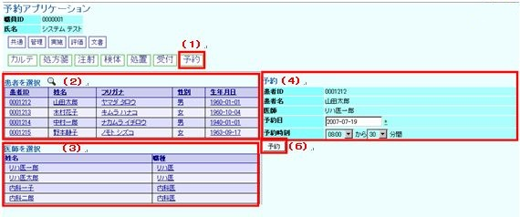
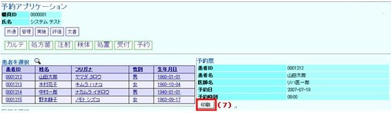

９ 予約
９－１ 予約
（１） 「予約」ボタンをクリックします

（２） 画面右に患者様が表示されます
（３） 予約したい患者様をクリックすると担当医のリストが表示されます
（４） 予約を入れたい医師をクリックすると左画面に選択した患者様と担当医師が表示されます
（５） 予約を入れたい日付と時刻を入力します
（６） 「予約」ボタンをクリックすると患者様の予約が完了します
（７） 「印刷」ボタンをクリックすると予約票が表示されますので、印刷して患者様にお渡し下さい
